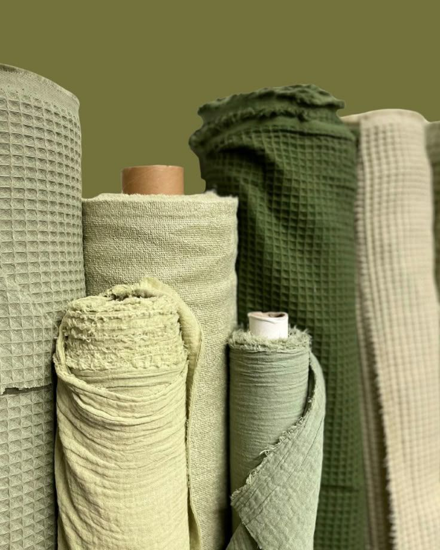

Algodão Orgânico
É cultivado sem agrotóxicos e sem adubos químicos, o que protege o solo, a água e a saúde de quem trabalha no campo. É macio, respira bem e se decompõe com facilidade.
Entenda de que as roupas são feitas, conheça fibras e corantes de menor impacto e descubra peças que ganharam uma nova vida.
Toda roupa começa em uma matéria-prima: uma planta, uma madeira, um plástico reciclado. A escolha desse material define quanta água, energia e produtos químicos foram usados até a peça chegar até você.
Materiais ecológicos são aqueles que causam menos impacto ao ambiente e às pessoas, seja porque vêm de cultivos mais cuidadosos, seja porque aproveitam o que já existe e evitam novos resíduos.
Nesta página você conhece os principais materiais, aprende o que é upcycling e encontra peças feitas com eles.

Nenhum material é perfeito, mas alguns pesam menos no planeta. Veja o que cada um oferece e o que merece atenção.
É cultivado sem agrotóxicos e sem adubos químicos, o que protege o solo, a água e a saúde de quem trabalha no campo. É macio, respira bem e se decompõe com facilidade.
São fibras tiradas do caule de plantas resistentes. Dão tecidos frescos e duráveis, que amaciam com o uso e acompanham a peça por muitos anos.
É uma fibra feita de celulose da madeira, com toque macio e caimento leve. Vale procurar marcas que informem a origem da madeira e como o processo é feito.
É feito de garrafas plásticas e outros resíduos, o que evita que eles sejam descartados. Ele ainda solta microplásticos na lavagem, por isso o ideal é lavar menos e usar saquinhos filtrantes.
Cascas, folhas, flores e raízes tingem tecidos sem corantes sintéticos. Os tons são suaves e podem variar de peça para peça, e isso faz parte da beleza do trabalho manual.
Retalhos, jeans usados, lonas e fios recuperados viram matéria-prima nova. É o material de menor impacto, porque não exige produzir nada do zero.
| Material | De onde vem | Ponto forte | Merece atenção |
|---|---|---|---|
| Algodão orgânico | Planta de algodão, cultivada sem agrotóxicos | Macio, respirável e biodegradável | Ainda precisa de água para crescer |
| Linho | Caule da planta do linho | Durável, fresco e de aspecto natural | Amassa com facilidade |
| Cânhamo | Caule da planta de cânhamo | Muito resistente e amacia com o uso | Pode ser áspero no início |
| Lyocell | Celulose da madeira | Toque macio e caimento leve | Depende da origem da madeira |
| Poliéster reciclado | Garrafas plásticas e resíduos | Evita o descarte de plástico | Solta microplásticos na lavagem |
Dados de organizações reconhecidas ajudam a entender por que a escolha do material importa.
Upcycling é transformar o que seria descartado em algo novo e de mais valor. Em vez de virar lixo, a peça velha vira matéria-prima.
O material é desfeito e refeito, o que costuma gastar energia e água. Por exemplo, garrafas plásticas que viram fio de poliéster.
A peça ou o tecido é aproveitado quase como está, com criatividade e costura. Por exemplo, uma calça jeans velha que vira uma bolsa.
Peças feitas com fibras naturais, corantes naturais ou materiais reaproveitados. Cada card mostra o material e o prazo de produção.
Os criadores, as peças e os preços desta página são fictícios e foram criados para demonstrar o funcionamento do site.
Fibra natural
Folha & Raiz
R$ 179,00
Fibra natural
Ateliê Veste Todos
R$ 229,00
Corante natural
Folha & Raiz
R$ 79,00
Upcycling
Ateliê da Rosana
R$ 259,00
Upcycling
Coletivo Mãos de Tear
R$ 199,00
Upcycling
Ateliê da Rosana
R$ 129,00
Na galeria você acompanha como peças descartadas se transformam em roupas e acessórios novos.
Fale com a nossa equipe para tirar dúvidas, divulgar sua marca ou propor uma parceria.